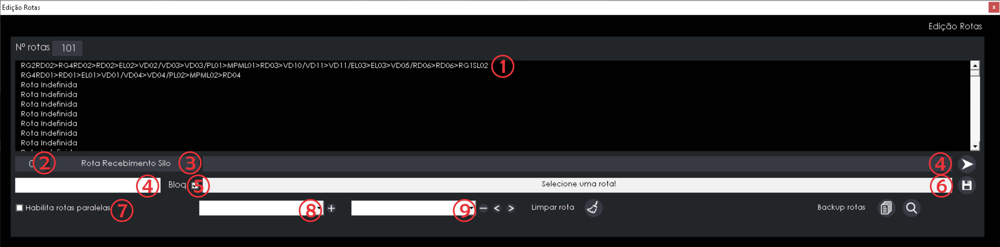
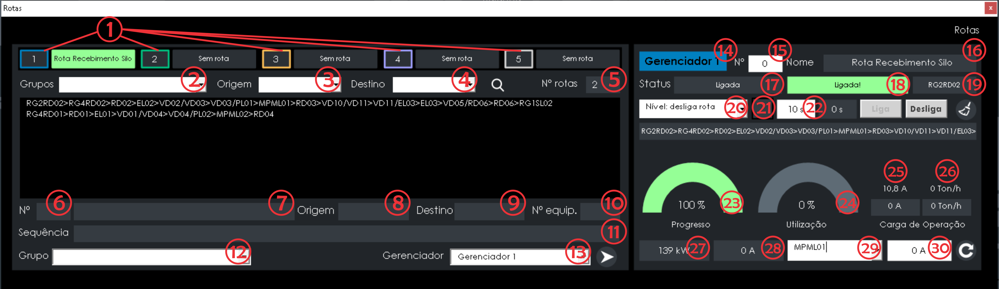
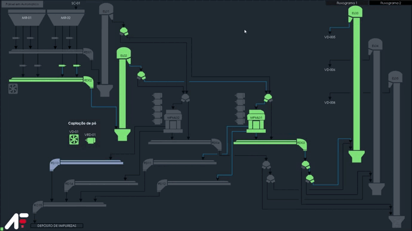
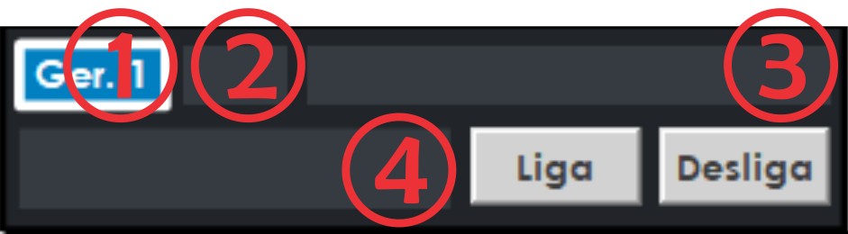

Rotas
Criando uma Rota
O primeiro passo para criar uma rota é abrir no menu principal a tela de "Edição de rotas" a rota deve ser selecionada com direção ORIGEM até o DESTINO desejado como no vídeo abaixo, não esqueça de salvar! 😉
LEGENDAS EDIÇÃO DE ROTAS
| Índice | Descrição |
|---|---|
| 1 | Rota. |
| 2 | Número da rota. |
| 3 | Nome da rota. |
| 4 | Campo para digitar o nome da rota. |
| 5 | Bloqueia para editar de rotas manualmente. |
| 6 | Estado atual da rota. |
| 7 | Habilita para ligar rotas paralelas, rotas que se interligam em um equipamento. |
| 8 | Todos equipamentos disponiveis para adicionar a rota. |
| 9 | Todos equipamentos disponiveis para remover da rota. |
 Move o equipamento selecionado para a posição anterior.
Move o equipamento selecionado para a posição anterior.
 Apaga rota do campo.
Apaga rota do campo.
 Salva a rota para usar no gerenciador.
Salva a rota para usar no gerenciador.
O segundo passo é abrir no menu principal a tela de "Rotas" selecionar a rota que foi criada e enviar para um gerenciador, feito isso você ja pode mandar ligar a rota! Lembrando que o próprio gerenciador já faz o acionamento em sentido contrário ao fluxo.
Cada gerenciador pode ligar apenas uma rota, mas podem ser usados mais de um gerenciador ao mesmo tempo, você também pode operar as rotas pelo atalho que fica na tela do fluxograma, para fazer isso basta arrastar o mouse até o topo da tela.
Legenda Gerenciador
| Índice | Descrição |
|---|---|
| 1 | Representa o numero do gerenciador e a Rota designada. |
| 2 | Opção para filtrar por grupos de rotas (Ex: Recebimento, Expedição, Transilagem, etc). |
| 3 | Opção para filtrar pelo equipamento Origem da Rota. |
| 4 | Opção para filtrar pelo equipamento Destino da Rota. |
| 5 | Número total de rotas cadastradas. |
| 6 | Número da rota selecionada. |
| 7 | Nome da rota selecionada. |
| 8 | Origem da rota selecionada. |
| 9 | Destino da rota selecionada. |
| 10 | Número de equipamentos cadastrados na rota. |
| 11 | Sequência dos equipamentos da rota. |
| 12 | Escolhe o Grupo que deseja manter a rota selecionada. |
| 13 | Escolhe o Gerenciador que deseja enviar a rota selecionada |
| 14 | Gerenciador selecionado. |
| 15 | Número da rota. |
| 16 | Nome da rota |
| 17 | Status da rota. |
| 18 | Progresso da rota |
| 19 | Equipamento em processo |
| 20 | Seleciona se desliga a rota pelo nivel ou apenas fecha a origem. |
| 21 | Seleciona se deseja animar os canos. |
| 22 | Define o tempo que levará para desligar a rota. |
| 23 | Progresso da rota. |
| 24 | Quando o equipamento de origem da rota tem leitura de corrente é possível estimar o aproveitamento da capacidade(ton/h) do mesmo através da leitura de corrente. |
| 25 | Corrente máxima e utilizada. |
| 26 | Tonelada hora máxima e utilizada. |
| 27 | Potência do equipamento. |
| 28 | Corrente do equipamento. |
| 29 | Tag do equipamento. |
| 30 | Corrente do equipamento a vazio (corrente sem produto) |
 Botão que envia a rota para o gerenciador.
Botão que envia a rota para o gerenciador.
 Botão que apaga todos os dados do gerenciador.
Botão que apaga todos os dados do gerenciador.
 Botão que altera o valor da corrente nominal a vazio.
Botão que altera o valor da corrente nominal a vazio.
 Botão que liga a rota.
Botão que liga a rota.
 Botão que desliga a rota.
Botão que desliga a rota.
Atalho Gerenciador
LEGENDAS ATALHO GERENCIADOR
| Índice | Descrição |
|---|---|
| 1 | Número do gerenciador. |
| 2 | Número da rota. |
| 3 | Rota. |
| 4 | Status da rota. |
Botão que liga a rota.
Botão que desliga a rota.